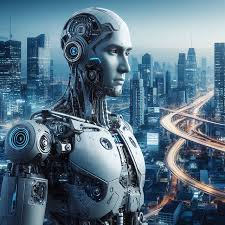

Artificial Intelligence (AI) refers to the simulation of human intelligence in machines that are programmed to think and learn like humans.
Key Characteristics2. Machine Learning:
AI systems can learn from data and improve their performance over time. 3. Problem-Solving:
AI systems can solve complex problems by analyzing data, identifying patterns, and making decisions. 4. Reasoning and Decision-Making: AI systems can draw conclusions, make predictions, and take actions based on data and programming. 5. Perception and Understanding: AI systems can interpret and understand data from sensors, text, images, and audio.

The term may also be applied to any machine that exhibits traits associated with a human mind such as learning and problem-solving.
AI technology is divided into two main categories: narrow AI and general AI.Here's a pointwise explanation of what AI is:
Basic Definition
1. AI stands for Artificial Intelligence: AI refers to the simulation of human intelligence in machines that are programmed to think and learn like humans.
Types of AI
6. Narrow or Weak AI: Designed to perform a specific task, such as facial recognition, language translation, or playing chess.
7. General or Strong AI: A hypothetical AI system that possesses the ability to understand, learn, and apply knowledge across a wide range of tasks, similar to human intelligence.
8. Superintelligence: A hypothetical AI system that significantly surpasses the intelligence and capabilities of humans.
AI Applications
9. Virtual Assistants: AI-powered virtual assistants, such as Siri, Alexa, and Google Assistant, can perform tasks, answer questions, and provide information.
10. Image and Speech Recognition: AI-powered systems can recognize and interpret images, speech, and text.
11. Natural Language Processing (NLP): AI-powered NLP can analyze, understand, and generate human language.
12. Expert Systems: AI-powered expert systems can provide advice and guidance in specific domains, such as medicine, finance, and law.
AI Techniques
13. Machine Learning Algorithms: AI systems use machine learning algorithms, such as neural networks, decision trees, and clustering, to learn from data.
14. Deep Learning: AI systems use deep learning techniques, such as convolutional neural networks (CNNs) and recurrent neural networks (RNNs), to analyze complex data.
15. Natural Language Processing (NLP) Techniques: AI systems use NLP techniques, such as tokenization, stemming, and lemmatization, to analyze and understand human language.
Narrow AI is designed to perform a specific task, such as facial recognition, language translation, or playing chess.
General AI, on the other hand, refers to a hypothetical AI system that possesses the ability to understand, learn, and apply knowledge across a wide range of tasks, similar to human intelligence.